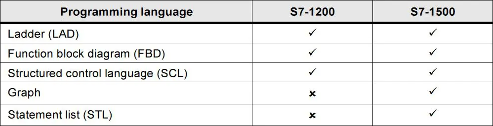
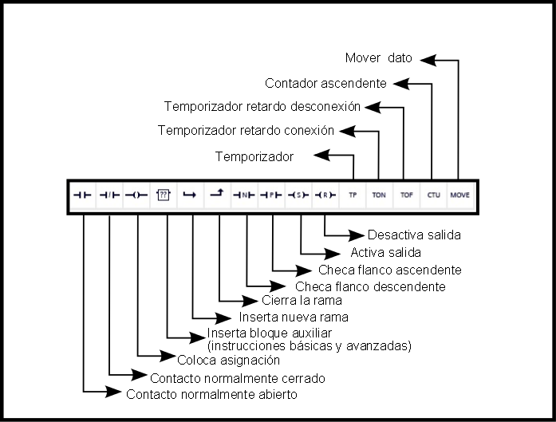
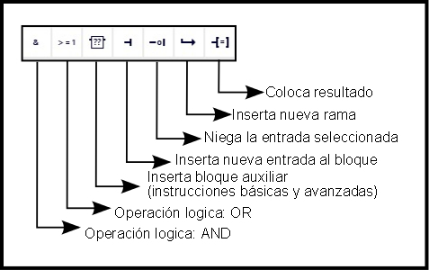
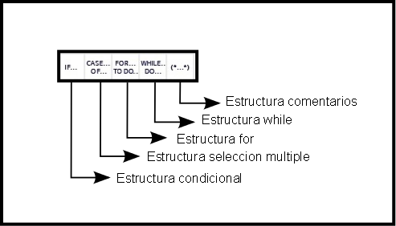
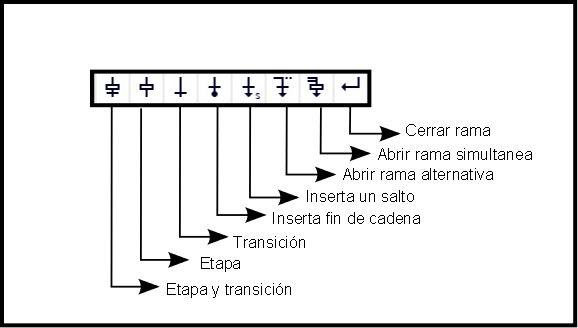
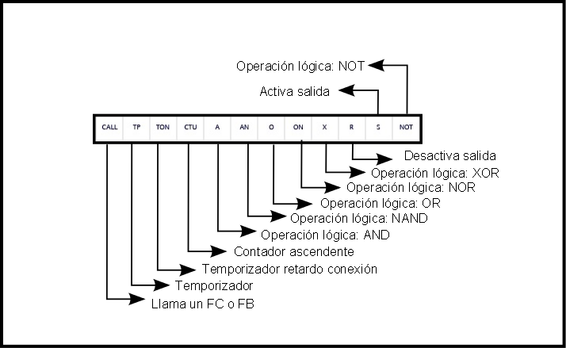
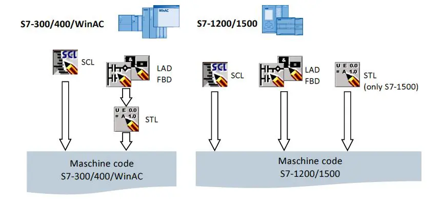

Para la programación de un programa de usuario, están disponibles varios lenguajes de programación diferentes. Cada lenguaje tiene sus propias ventajas, que se pueden utilizar en casos determinados, dependiendo de la aplicación. Cada bloque en el programa de usuario por lo tanto puede ser creado en cualquier lenguaje de programación.

LADDER (LAD) ó Kontaktplan (KOP)
También conocido como diagrama de contactos o de escalera. Este lenguaje hace uso de lógica booleana por medio de contactos eléctricos en serie y en paralelo. Actualmente es el lenguaje más utilizado en la programación de PLC´s ya que es muy fácil de entender para personas familiarizadas con diagramas eléctricos.

Function Block Diagram (FBD) ó Funktionsplan (FUP)
Este lenguaje se denomina diagrama de funciones. Esta íntimamente ligado con la lógica booleana, ya que todas las funciones se representan por medio de funciones lógicas tales como: OR, AND, NOT, XOR, NAND, NOR, etc. Además incluye funciones matemáticas más complejas en forma de bloques.

Structured Control Language (SCL)
Siemens proporciona un lenguaje extra que se parece mucho a PASCAL, un lenguaje de alto nivel que proporciona sentencias de bucles y condiciones. Se considera de mucha utilidad cuando se busca implementar programas con cálculo de fórmulas, algoritmos de optimización robustos y cuando se tenga que analizar mucha información.

S7 - GRAPH
La función principal de este lenguaje es la creación de una cadena de etapas, es decir, pequeños bloques de código que representan funciones especificas del proceso. El contenido de las etapas define un lenguaje de programación especial (similar a STL), en tanto que las condiciones de transición se introducen en una representación del esquema de contactos (parte del lenguaje de programación KOP). S7-GRAPH permite representar también procesos complejos de forma muy clara, permitiendo así una programación y una búsqueda de errores efectivas.

Statement List (STL) ó Anweisungsliste (AWL)
Denominado lista de instrucciones. Este lenguaje se parece mucho a la programación utilizada en ensamblador ya que busca dar instrucciones en un nivel muy bajo de programación para que el controlador no pierda mucho tiempo en traducir la información. La gran desventaja que existe con este lenguaje es el tamaño del código que se hace más grande mientras más complejo es el proceso.

Compilación
TIA Portal y S7-1200 / 1500 permiten un rendimiento de ejecución optimizado en cualquier lenguaje de programación. Todos los lengiajes se compilan por igual, directamente en el código máquina.
En los PLC S7-1200 / S7-1500 podemos encontrar una mejora en el rendimiento debido a un proceso de compilación más optimizado que en controladores previos:
Todos los lenguajes de programación tienen el mismo rendimiento (con el mismo tipo de acceso).
Proceso optimizado debido a que se evita un paso intermedio de compilación de los bloques a STL para posteriormente compilarlo al lenguaje máquina.

Activar característica de Windows .Net Framework 3.5
Crear un nuevo proyecto / Agregar controlador
Agregar módulo de expansión de entradas digitales
Agregar módulo de expansión de entradas y salidas analógicas